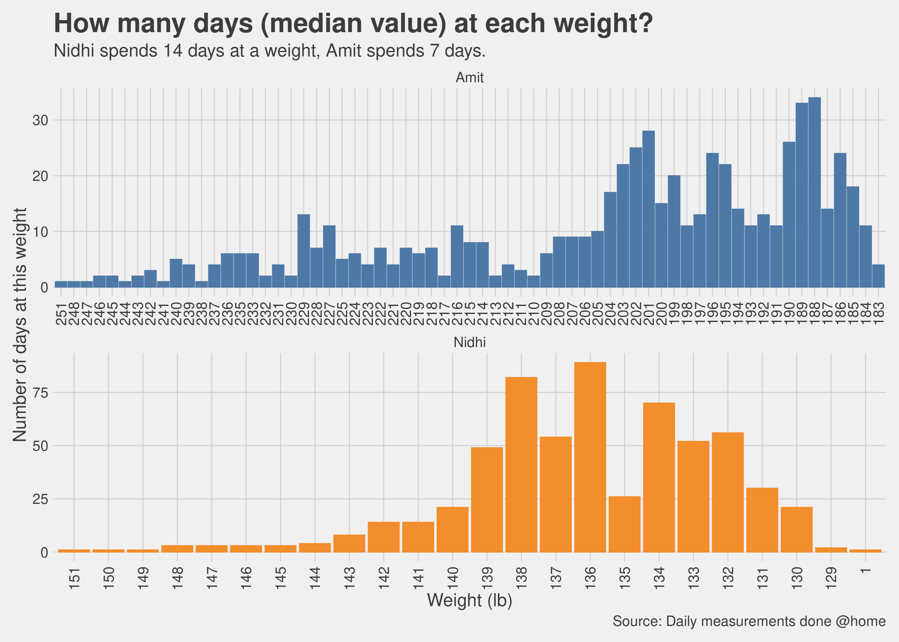
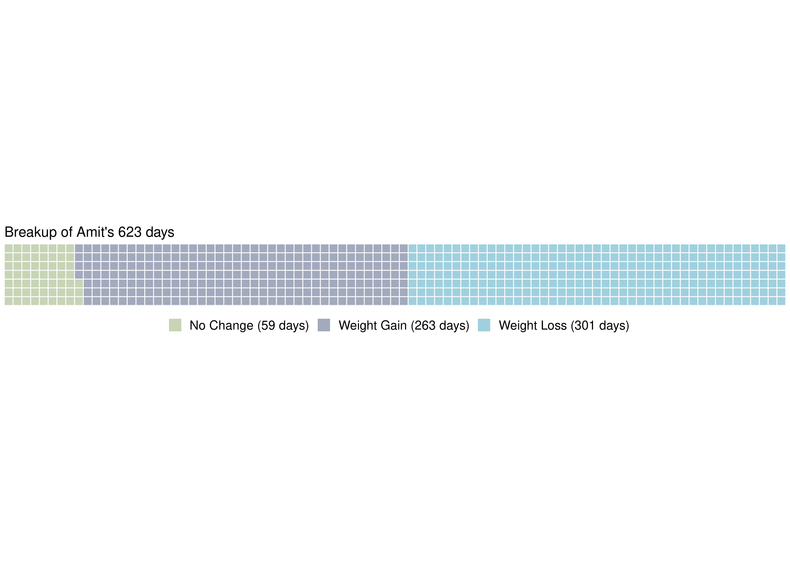

Chapter 11 Other Topics
Here is a collection of some “stream of consciousness” topics that I wanted to convey but did not fit into any of the other chapters so here they are all in a chapter of their own.
11.1 The “Murph” Challenge
In May of 2020, during one of our Zoom workouts, our trainer just casually mentioned that they were doing this challenge in a couple of weeks where they would do a “1 mile run, 100 pull-ups, 200 push-ups, 300 air-squats and then bookend it with another 1 mile run”. I had just managed to do like 3 push-ups in a row and I almost fell to the ground doing my 4th push-up and blurted out “in how many days…?”. While this question might seem funny at this time, hand to the heart, it was a serious question when I asked it. Remember this was coming from a person who thought doing 3 straight push-ups was an achievement. I was being told, in a matter of fact tone, that are regular people like me who would be able to do this.
The answer to my question, was “um, some people take an hour and half, but mostly it is done in under an hour, and then we can do modified push-ups also”, so no it was not an event spread out over multiple days. I did not ask further and that topic did not come up again and until about an year later.
By April of 2021, I could do 4 sets of 8 push-ups relatively easily, I had also done 50 push-ups spread over 4 sets with each set going up to failure (so like 15 in the first one, 13 in the second, 10 in the third, 12 in the fourth just to make it to 50). At this time, I could at least comprehend that yes it would be possible for regular folks who had been training for a few years or had trained earlier when they were much younger that doing this kind of a routine would be challenging for sure but not as impossible as it had seemed to me a year ago. When we talked about this challenge again, then I looked up the history behind it and I thought this year both Nidhi and I should be able to do this (see https://themurphchallenge.com/).
I decided to prepare for the challenge, the last thing I wanted was to show up there and then not be able to complete it. So once a week until the challenge day (Memorial day) I trained to do a mini murph at home, which included a mile on the rower, followed by 5 sets of 6 pull-ups, 6 push-ups and 6 air-squats (or sit-ups) and then a mile on the rower again. I took 30 seconds break between each set. When I did it the first time, I had no idea how hard it would be, fortunately, it seemed manageable. Why the number 6? Because by that I could only do 6 pull-ups in a row, doing 8 push-ups seemed hard after the first 2 sets so I wanted to pace myself and so 6 seemed like a nice comfortable number. While I managed to complete the 5 sets that I wanted to, but Ialso realized that at this pace I would be at it for a very long time. Next week, increased the push-ups to 8, and air-squats to 10 per set. Still Manageable. Reaching upto the challenge day, I was settled into 5 pull-ups, 10 push-ups and 15 air-squats per set, just had to complete 20 sets of this and we would be done.
A few friends of ours were planning a trip to the beach on that Memorial day weekend and that would have meant that we reach home late evening on Saturday and then just show up Sunday morning without a good night’s rest. We decided against it, instead had a relaxed Saturday, ate simple carb rich dinner, a mile long post dinner walk, and then went ot bed around 9:30pm. Walk up next morning, quick 5 minute morning walk and then showed up in the local park where the rest of the folks from our gym were gathering.
Memorial day 2021 in Clarksburg, MD was a bright sunny day, temperature in the early 50s if I remember correctly. A near perfect day for being outside. We started with the 1-mile run, I had not run a mile before, at least not that I could remember. It was challenging, I think completed it nine and a half minutes. Started with the 5 pull-ups (to be clear, we did jumping pull-ups, I know, not the same thing but hey it wasn’t a cake either), 10 push-ups and 15 air-squats routine. The energy of seeing people around you doing the same workout rubs on you. I took 10 to 15 seconds breaks between sets, slowly the breaks increased to 20 to 30 seconds and towards the end 45 seconds. Finally managed to finish the 20 sets. The hardest part was the push-ups, 200 push-ups are a lot of push-ups. By the time we finished, most people were already done with their second 1-mile run. I ran half of the last mile and walked the other half. Finally, when I finished, it was a few seconds shy of 60 minutes. I was the last person to finish the challenge, but that part was irrelevant, I was overjoyed that I finished the challenge. A year ago I was thinking this was a multi-day activity, and here I was drenched in sweat, all done in under an hour!
Next year, I aim to complete the challenge in less than 45 minutes, maybe even 35 minutes, I guess we will find out. Here is a picture of Nidhi and me just after completing the challenge.

Murph Challenge
11.2 My first 5K run
Running is not one of my favorite activities, probably because growing up I was never fit enough to run for more than a few hundred meters. As I progressed in my fitness journey I wanted to explore things I did not think were possible and running was one of those things for sure. I wanted to see what would all those calories burnt and minutes spent on the assault bike translate into on a trail. I had run the 1 + 1 mile during the Murph but nothing after that.
We had just returned from an early morning shopping trip on the Friday after Thanksgiving and I happen to notice an instagram post from our trainer about a 5k run in a park nearby. 5k or 3.1 miles should be manageable, I thought to myself, and if I cannot run all the way then I could always walk. I had started enjoying spending time outdoors and there wasn’t really any reason to not do this, so I signed up. The run was next morning.
It was extremely cold and windy the next morning and we were all gathered at the Rachel Carson trail in Brentwood, MD. It was a 5k loop, start from the parking lot, run the loop and finish the run at the same spot. We started together divided into two groups, a group that wanted to run, a group that wanted to walk and enjoy the scenery and then there was me who wanted to start with a run and then fall back to the walkers group if needed. I wanted to run/walk the whole 5k without having to breath through my mouth and that would also mean run at a comfortable pace so that I did not run out of air and just had to breath. About 800 meters in, I had to slow down and walk, it was not a flat trail and more importantly I had forgotten to do my pre-workout breathwork and I think it was making it’s absence felt. After walking for a couple of minutes, I started running again and this time, it felt easy, I could run without having to stop. Had to slow down and stop to tie my shoelaces, and also the group ahead of me was waiting for the rest of the folks to catch up. Back to running again, then walking a little bit, then running again and before I knew it, I could see the road again and suddenly I could see the parking lot from where we started, I sprinted the last couple of hundred meters.
Took me 30 minutes for the 5k. Not too bad, I thought. I really enjoyed it and I am looking forward to make these short 5k runs a monthly family activity. Here is some data from my watch, for some reason it got the time and duration a little bit wrong but overall it was good to see this data and use it as a baseline for future runs.

watch data for 5k run
11.3 What about supplements?
We did take supplements for micro-nutrients (vitamins and minerals). To be clear, the intention was not take supplements for muscle building but for general health, more like an insurance against missing out key micro-nutrients from the food. Even with the previous protein based diet program that I followed earlier there was a recommendation for different vitamin and minerals supplements so when we started exercising more, the topics of supplements came up organically. We discussed with our trainer and as I started reading more and more, I got more convinced that we should take some micronutrient supplements to augment what we were eating. I did my own research, which is a fancy way of saying I looked up supplements and their effects on labdoor.com and examine.com and also discussed with my trainer as to which supplements were required and which brands had ingredients which were minimal and safe.
Here is my list:
- Vitamin D
- Vitamin C
- Zinc
- Multi Vitamins
- Fish Oil
- Probiotics
- Amino Acids
- Creatine Monohydrate
Did not start taking these supplements from day 1, this happened over a 6 month period. Do not start any supplements without first consulting with your doctor.
11.4 Small knobs & big knobs
Exercise and nutrition are the big knobs by which we can control weight and general health. As we progressed through our journey, we realized that there are small knobs as well which are needed to fine tune the body’s response during the proverbial last mile. Losing first few pounds is easy, as most people would say, maybe even losing the first 5 pounds is easy, losing the last 5 pounds is insanely hard. That is where the small knobs become extremely important. The small knobs are
Sleep: I have noticed this several times, not having a good sleep shows up unfavorably on the weighing scale the next morning. With my level of exercise now my body demands a good 7 hour sleep.
Making sure your are not getting less calories than what your body needs: if the body is not getting enough calories it will fight to keep whatever fat it has and therefore weight loss will become difficult. I have certainly experienced this.
Stress: we all live extremely busy lives, the demands of work, family and social engagements does cause stress and too much stress is bad for weight loss in the same way it is bad for anything else. The Corona pandemic has helped maybe somewhat in that regards with social engagements much reduced, most of us working from home but of course it has has produced stress of its own.
11.5 For the love of charts
Here are some more charts that I could not fit anywhere else.
11.5.1 How many days did it take to lose every single pound?
Sometimes we get anxious about being stuck at a particular weight or oscillating within a few pounds. As enough data got collected, we could see empirically how many days did we spend at each weight level so that before we start getting anxious we know if we really need to or is it still within an observed range.

11.6 Breakup of the days
We know we lost weight on more days than we gained weight (otherwise this book would not exist), but a good visualization is always welcome.
